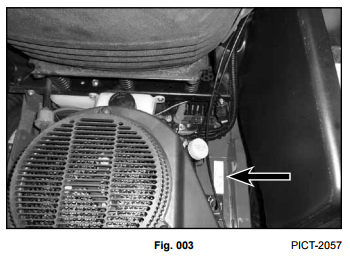
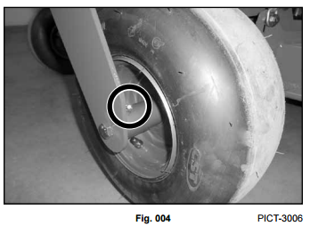
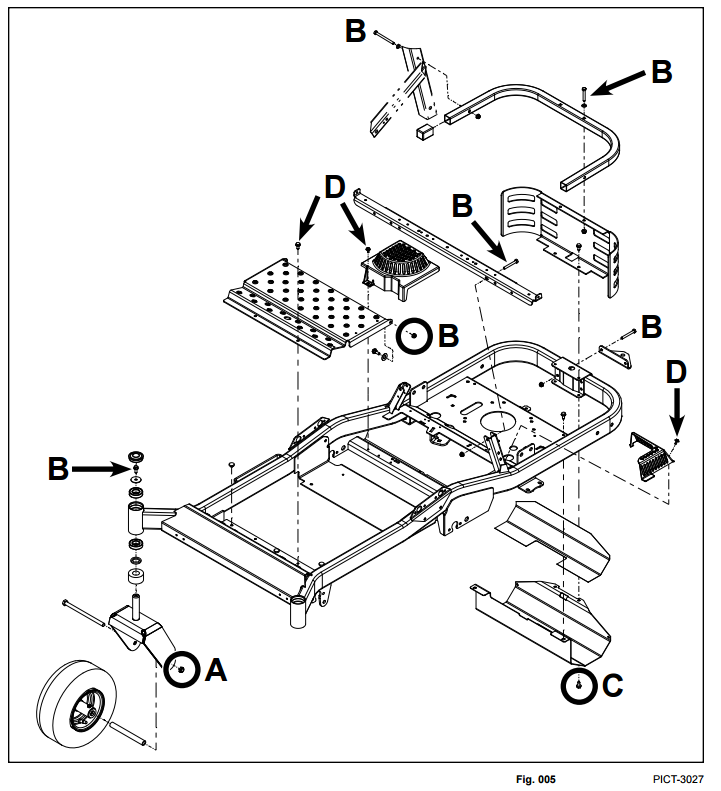
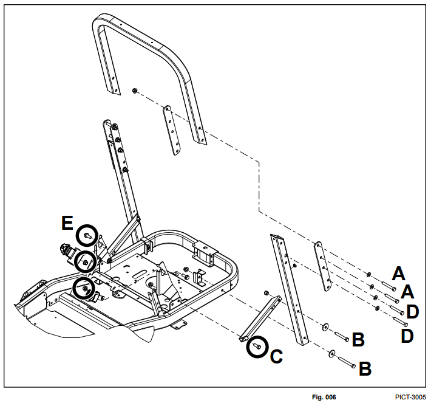
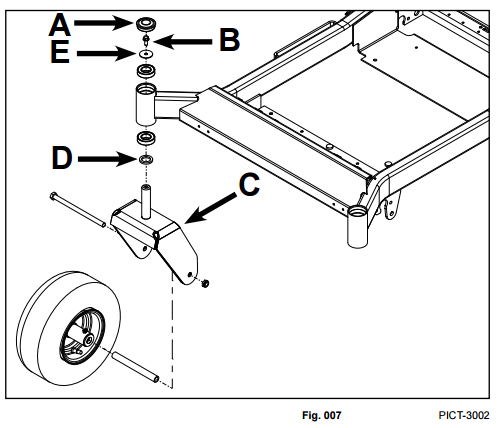
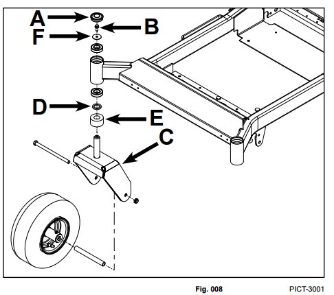
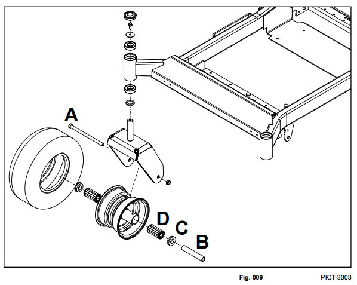
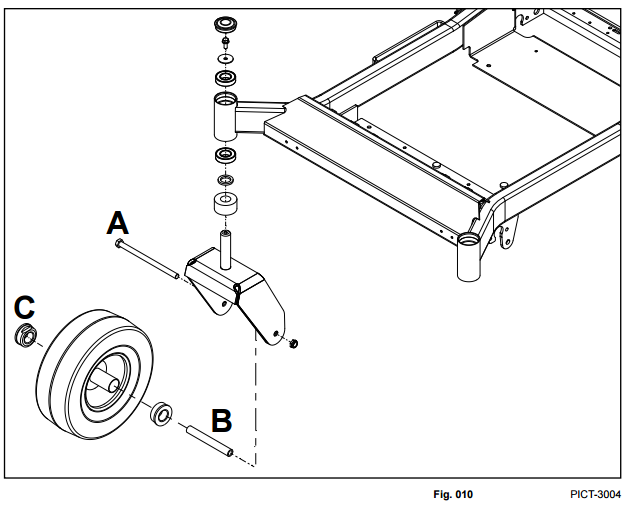

Chassis
Model and Serial Number Identification
The model and serial number identification plate is located on the frame, near the engine, on the RH side of the unit (Fig. 003)

Grease and Lubrication Point
Grease Type - No. 2 general=purpose litium base grease.
A grease fitting is located on each of the front wheel hubs.
The front wheel hubs should be greased every 25 hrs. (Fig. 004).

Frame and Chassis Exploded View

- A. 35 ft-lbs. (47 Nm)
- B. 17 ft-lbs. (23 Nm)
- C. 5 ft-lbs. (7 Nm)
- D. 50 in-lbs. (4 Nm)
ROPS Exploded View

ROPS Mounting Torque Sequence:
- Install, but do not tighten all ROPS mounting fasteners.
- Torque the (4) fasteners (A) to specification - 35 ft-lbs. (47 Nm)
- Torque the (4) fasteners (B) to specification - 25 ft-lbs. (34 Nm)
- Torque the (2) fasteners (C) to specification - 75 ft-lbs. (101 Nm)
- Torque the (4) fasteners (D) to specification - 35 ft-lbs. (47 Nm)
Other Torque Values:
E. Seat Belt Mounting Fasteners - 75 ft-lbs. (101 Nm)
Table of Contents
Front Axle / Caster Fork / Bearing Service (MX)
Front Axle / Caster Fork / Bearing Disassembly
- Safely raise and support unit so front wheels are off the ground.
- Remove dust cap (A).
- Support under caster wheel and remove the fastener (B).
- Remove caster fork (C) from the frame hub. Inspect the caster fork shaft and thrust washer (D) for excessive wear,
replace if necessary.
- Using an appropriate punch, tap out and remove the LOWER bearings from the frame hub.
- Using an appropriate punch, tap out and remove the UPPER bearings from the frame hub.
- Properly clean and inspect the frame hub bearing area.
Front Axle / Caster Fork / Bearing Assembly
- Use a proper bearing installation tool to install and fully seat new upper and lower bearings into the frame hub
- Install thrust washer (D) onto the caster fork shaft.
- Install the caster assembly up through the bearings and hold in position.
- Install washer (E).
- Install fastener (B0 and torque to specification - 17 ft-lbs. (23 Nm).
- Install the dust cap (A) until fully seated.
- Safely lower unit and verify proper function (Fig. 007).

Front Axle / Caster Fork / Bearing Service (ZX)
Front Axle / Caster Fork / Bearing Disassembly
- Safely raise and support unit so front wheels are off the ground.
- Remove the dust cap (A).
- Support under caster wheel and remove the fastener (B).
- Remove caster fork (C) from the front fram hub. Inspect the caster fork shaft, thrust waser (D) and spacer (E) for
excessive wear, replace if necessary.
- Using an appropriate punch, tap out and remove the LOWER bearings from the frame hub.
- USing an appropriate punch, tap out and remove the UPPER bearings from the frame hub.
- Properly clean and inspect the front axle bearing area.
Front Axle / Caster Fork / Bearing Assembly
- USe a proper bearing installation tool to install and fully seat new upper and lower bearings into the frame hub.
- Install spacer (E) and thrust washer (D) onto the caster fork shaft.
- Install the caster assembly up through the bearings and hold in position.
- Install washer (F).
- Install fastener (B) and torque to specification -17 ft-lbs. (23 Nm).
- Install the dust cap (A) until fully seated.
- Safely lower unit and verify proper function (Fig. 008).

Table of Contents
Caster Wheel, Bushing and Bearing Service (MX)
Caster Wheel, Bushing and BEaring Disassembly
- Safely raise and support unit so front wheels are off the ground.
- Support under caster wheel and remove the nut/bolt fastener (A).
- Remove and inspect wheel spanner (B). Replace if excessively worn.
- Use an appropriate punch to remove the (2) bushings (C) from the wheel hub. Inspect bushings and replace if excessively worn.
- Remove the (2) bearings (D) from the wheel hub. Replace if excessively worn.
- Properly clean and inspect the front wheel hub area.
Caster Wheel, Bushing and Bearing Assembly
- Lightly lubricate bearings (D), bushings (C) and wheel spanner (B) with No. 2 general-purpose lithium base grease. Fill center of wheel hub with grease.
- Install the (2) bearings (D) and (2) bushings (C) into front wheel hub, making sure they are fully seated.
- Install wheel spanner (B) into the front wheel assembly.
- Install front wheel assembly into the front caster
- Install the nut/bolt (A) and torque nut to specification - 35 ft-lbs. (4 Nm).
- Lubricate bushings/bearings through grease fitting with No. 2 general-purpose lithium base grease.
- Safely lower unit and verify proper function (Fig. 009).

Caster Wheel and Bushing Service (ZX)
Caster Wheel / Bushing Disassembly
- Safely raise and support unit so front wheels are off the ground.
- Support under caster wheel and remove the nut/bolt (A).
- Remove and inspect wheel spanner (B). Replace if excessively worn.
- Using an appropriate punch, remove the (2) bushings (C) from the wheel hub. Inspect bushings and replace if excessively worn.
- Properly clean and inspect the front wheel hub area.
Caster Wheel / Bushing Assembly
- Lightly lubricate bushings (C) and wheel spanner (B) with No. 2 general-purpose lithium base grease. Fill center of wheel hub with grease.
- Install the (2) bushings (C) into front wheel hub, making sure they are fully seated.
- Install wheel spanner (B) into the front wheel assembly.
- Install front wheel assembly into the front caster.
- Install the nut/bolt (A) and torque nut to specification - 35 ft-lbs. (47 Nm).
- Lubricate bushings/spanner through grease fitting with No. 2 general-purpose lithium base grease.
- Safely lower unit and verify proper function (Fig. 010).
